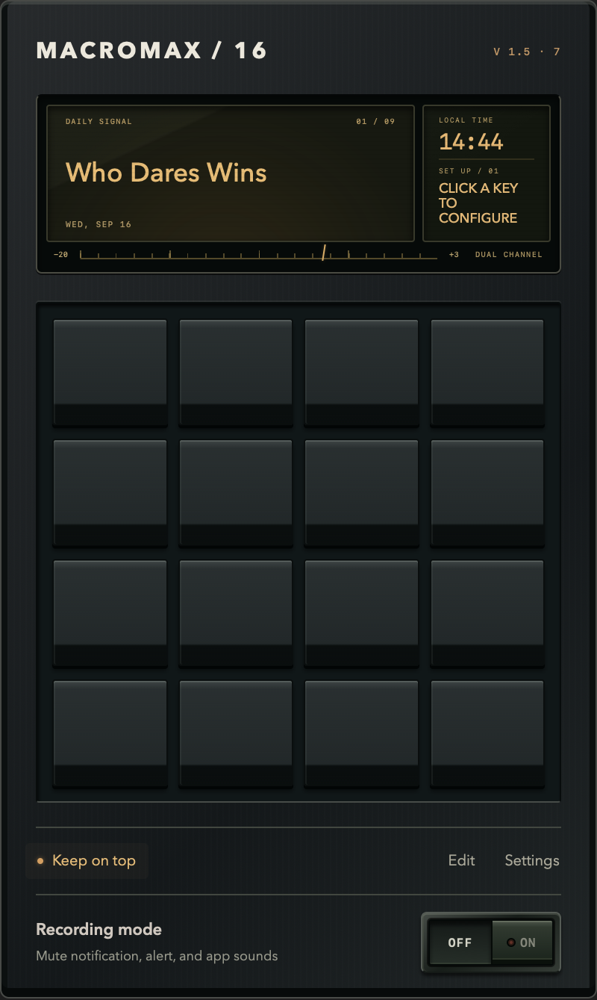

Apps. Links. Folders.
Open an app, visit a URL, or jump straight to a Finder folder—including a local Dropbox folder.
A PERSONAL CONSOLE FOR YOUR MAC
A tactile menu bar launcher for the apps, links, and folders you reach for all day.
Sixteen keys. Entirely yours.
Version 1.5 macOS 13+
Apple silicon & Intel Free
A personal app by Chris Hall.
Read the first-open instructions before installing.

SMALL APP. USEFUL HABITS.
Start with sixteen empty keys. Add what you use, arrange it your way, and keep it close.
Open an app, visit a URL, or jump straight to a Finder folder—including a local Dropbox folder.
Give each key a text label, add a color strip, and drag keys into place. Longer labels shrink to fit.
Open the pad from your menu bar, or keep it floating above your other apps. Drag it wherever it fits your work.
Recording Mode mutes supported audio outputs and restores your previous settings when switched off.
It doesn’t hide notification banners or block audio captured directly by recording software. Your microphone stays available.
YOUR FIRST OPEN
MacroMax is a free personal project, distributed directly. It isn’t notarized by Apple, so macOS may ask for an extra approval.
Get MacroMax 1.5 Prefer a ZIP? Download it here.Open the downloaded DMG and drag MacroMax into Applications. If you chose the ZIP, unzip it and move the app there.
Open it from Applications. Once it’s running, click the red M in your menu bar to bring up your pad.
For this specific MacroMax download, and only if you trust it, go to System Settings → Privacy & Security → Open Anyway, then choose Open.
Apple’s guide to safely opening appsOn a work Mac? Your IT team may need to approve installation.
Updates are manual. Version 1.5 has no automatic updater. Check this page for future releases.